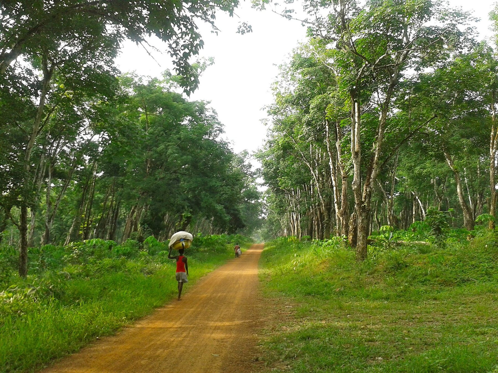

Caoutchouc naturel · San-Pédro, Côte d'Ivoire
Le caoutchouc naturel TSR de Côte d'Ivoire
PURCA transforme le coagulum des planteurs d'hévéa en caoutchouc technique TSR10 et TSR20, contrôlé lot par lot selon la norme ISO 2000.

L'entreprise
Du coagulum des planteurs à la balle certifiée
- Achat local. Coagulum collecté auprès des planteurs ivoiriens.
- Usine intégrée. Lavage, crêpage, séchage et pressage sur un même site.
- Laboratoire interne. Chaque lot analysé avant expédition.
Nos produits
Deux grades, un même niveau d'exigence
Production
Quatre étapes, une qualité mesurée
- 01
Réception
Pesée, contrôle et tri du coagulum par qualité de matière.
- 02
Lavage et crêpage
Broyage, lavage sous eau courante et passages en crêpeuse.
- 03
Séchage
Granulés séchés à température contrôlée.
- 04
Pressage et contrôle
Mise en balles, détection métal et analyse de chaque lot.
Contrôle qualité
Chaque lot est mesuré, pas estimé
Le TSR est classé sur des résultats de laboratoire, pas sur son apparence. Chaque lot est contrôlé avant de quitter l'usine.
Notre procédé- 01
Analyse en laboratoire
Des échantillons de chaque lot sont testés selon la norme ISO 2000.
- 02
Certificat d'analyse
Le certificat accompagne chaque expédition.
- 03
Traçabilité
Le numéro de lot suit chaque balle et chaque palette.
Industries
Où va notre caoutchouc
Galerie
De l'hévéa au latex
Un approvisionnement régulier ?
Grade, volume, destination : nous revenons vers vous avec une offre et la fiche technique.